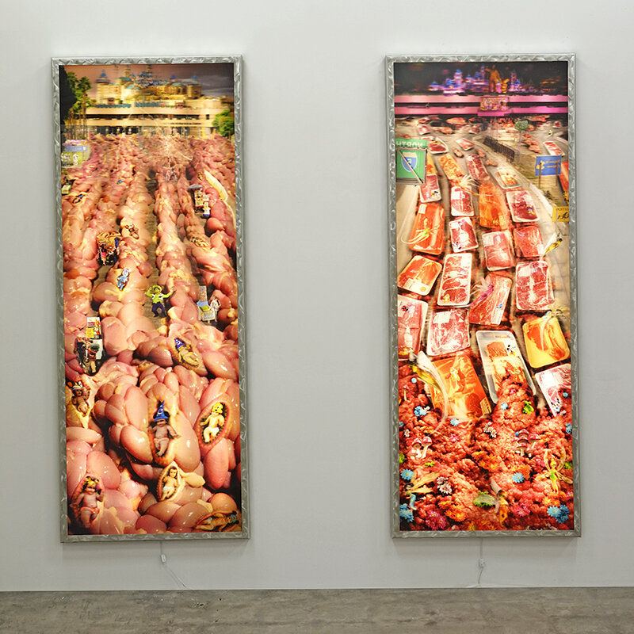

Collaborating brothers, Einar and Jamex De La Torre, were born in Guadalajara, México, 1963, & 1960.
In a sudden family move, the brothers moved to The United States in 1972, going from a traditional catholic school to a small California beach Town.
They both attended California State University at Long Beach, Jamex got a BFA in Sculpture in 1983, while Einar decided against the utility of an art degree.
Currently the brothers live and work on both sides of the border, The Guadalupe Valley in Baja California, México, and San Diego, California.
The complexities of the immigrant experience and contradicting bicultural identities, as well as their current life and practice on both sides of border, inform their narrative and aesthetics.
Solo Museum Exhibitions
2019
Florentine Syndrome, SiC! Gallery, Wroclaw, Poland (curated by Dominika Drozdowska and John Moran)
Rococolab, The George D. and Harriet W. Cornell Fine Arts Museum, Rollins College, Winter Park, FL (curated by Gisela Carbonell)
2018
Mexikanischer Maximalismus, Frauenau Glass Museum, Frauenau, Bavaria, Germany
2017
Dovenskalb (Sloth), Glasmuseet Ebeltoft, Ebeltoft, Denmark (catalog, essay by Selene Preciado)
2015
Three Solo Shows, Nationaal Glasmuseum, Leerdam, Holland (curated by Jeroen Maes / catalog, essay by John Drury)
2014
Three Solo Shows, National Glass Centre Museum, Sunderland, England (curated by Jeroen Maes / catalog, essay by John Drury)
2013
Three Solo Shows, GlazenHuis Museum, Lommel, Belgium (curated by Jeroen Maes / catalog, essay by John Drury)
2012
Einar & Jamex de la Torre, The Chrysler Museum of Art, Norfolk, VA
El Melting Pot, Mesa Arts Center Museum, Mesa AZ
2011
Borderlandia, The Tucson Museum of Art, Tucson AZ
2010
Borderlandia, Craft and Folk Art Museum, Los Angeles, CA
La Reconquista, MACLA / Movimiento de Arte y Cultura Latino Americana, San Jose, CA (NEA grant)
2008
MesoAmerichanics, National Hispanic Cultural Center, Albuquerque, NM (curated by Tey Nun / catalog, essays by Tomas Ybarra-Frausto and Tey Nun)
2005
Reaching Critical Mass, Carnegie Art Museum, Oxnard CA
2005
Intersecting Time and Space, The Museum of Glass: International Center for Contemporary Art, Tacoma, WA (catalog, essay by Tina Oldknow)
2004
Einar & Jamex de la Torre, Museum of American Glass, Millville, NJ
2003
Einar & Jamex de la Torre, Museum of Art Fort Collins, Fort Collins, CO
2002
Neoreliquias, MUSA / Museo de las Artes Universidad de Guadalajara, Jalisco, México (curated by Ricardo Duarte / catalog, essay by Felipe Ehrenberg)
2001
Anacronistas, Mexic-Arte Museum, Austin TX (essay by Marilyn Zeitlin)
1998
Ojito Tapatio, The Mexican Fine Arts Center Museum, Chicago, IL (curated by Linda McAllister)
El Niño’s Wake, MACLA Movimiento de Arte y Cultura Latino Americana, San Jose, CA (essay by Raquel Tibol)
1997
Borderline Glass, Arizona State University Art Museum, Tempe, AZ (curated by Heather Sealy Lineberry)
Special Projects and Biennales
2019
El Dorado, Installation part of Lille 3000 festival, France (curated by Ana Elena Mallet)
2014
MUJAM billboard part of ‘Open Walls Project’ San Diego, CA
2011
Río Loco Art and Music Festival, Toulouse, France
2010
Bienal de Estandartes Tijuana ’10, Centro Cultural Tijuana, MX (curated by Marta Palau)
2008
Pho’zole, The California Biennal, Orange County Museum of Art, Newport Beach, CA
2005
Quinto Sol, 5th Bienal do Mercosul, Porto Allegre, Brasil (catalog)
1999
Cuarta Bienal Monterrey, Museo de Arte Contemporáneo de Monterrey, Monterrey, México (catalog)
1997
“El Niño”, binational installation for inSITE97, el Centro Cultural de Tijuana, México (curated by Sally Yard, Ivo Mesquita, Oliver Debroise, and Jessica Bradley / catalog)
Solo Gallery Exhibitions
2019
High Noon, Robert Lehman Gallery-UrbanGlass, Brooklyn, NY (curated by Ben Wright)
Latino Art Now!, Smithsonian Latino Center at Nicole Longnecker Gallery, Houston, TX
2018
Sloth, Quint Gallery, San Diego, CA
2017
Borders & Other Imaginary Fractals, Koplin del Rio Gallery, Seattle, WA
2015
Quemando las Naves, Koplin del Rio Gallery, Culver City, CA
Hyperkulturemia, The William Traver Gallery, Seattle, WA
Quemando las Naves, The Ship in the Woods gallery, Encinitas, CA
2014
Folkloric Acid, The Mindy Solomon Gallery, Miami, FL
Whysidro, The Front Gallery, San Ysidro, CA
2012
Microcosmos, William Traver Gallery, Seattle, WA
2011
Fallen Angels, S12 Gallery and Workshop, Bergen, Norway
2010
Animexican, Koplin del Rio Gallery, Culver City, CA
Pimp my Glass, The William Traver Gallery, Seattle, WA
Inter-Continental Divide, Kimball Art Center, Park City, UT
2008
New Colonies in the New World, Koplin del Rio Gallery, Culver City, CA
Vitrolic Compliments, The William Traver Gallery, Seattle, WA
2007
Figurate Esto, Lisa Sette Gallery, Phoenix, AZ
2005
Desperados, The Price-Dewey Gallery, Santa Fe, NM
Folkloric Acid, Koplin del Rio Gallery, Culver City, CA
End of Empire, CSUF / California State University Fullerton, Begovich Gallery, Fullerton, CA (catalog, essay by Felipe Ehrenberg)
Einar & Jamex de la Torre, The Daniel Saxon Gallery, Los Angeles, CA
2004
Infection Confection, Lisa Sette Gallery, Phoenix, AZ
Super Grotesque Beauty, The Daniel Saxon Gallery, Los Angeles, CA
2003
Eurovirus, The Daniel Saxon Gallery, Los Angeles, CA
Neorelics: The Spanglish Period, The Salina Art Center, Salina, KS
2002
Angry Gods, The Daniel Saxon Gallery, Los Angeles, CA
2001
Neorelics, The Porter Troupe Gallery, San Diego, CA
Neorelics, The Snyderman Gallery, Philadelphia, PA
Anacronistas, Grand Arts, Kansas City, MO (curated by Sean Kelly, essay by Leah Ollman)
2000
The Mexican Problem, Intersection for the Arts, San Francisco, CA (curated by Kevin Chen)
Ácido Folclórico: en Retrosperspectiva, Centro Cultural Tijuana, Tijuana, MX (essays by Felipe Ehrenberg and Olga Margarita Dávila)
1999
Nouveau Riche, The Lisa Sette Gallery, Phoenix, AZ
La Conquista, The Daniel Saxon Gallery, Los Angeles, CA
Mesomodern, The William Traver Gallery, Seattle, WA
Oxymodern, The Porter Troupe Gallery, San Diego, CA
El Niño's Wake, MACLA / Movimiento de Arte y Cultura Latinoamericana, San José, CA
Arte Frontera, The Snyderman Gallery, Philadelphia, PA
1998
11:58 (PMAD), The Robert Lehman Gallery, Urbanglass, Brooklyn, NY (curated by Olga T. Valle)
The Intersections Program at the University of Hawaii, Pegge Hopper Gallery, Honolulu, HI
1997
The Marlboro Man & the Virgin, The Daniel Saxon Gallery, Los Angeles, CA
God's Country, The William Traver Gallery, Seattle, WA
The Glass Frontera, Joanne Rapp Gallery, Scottsdale, AZ
1996
Folkloric Acid: The Resurrection, MACLA / Movimiento de Arte y Cultura Latinoamericana, San José, CA (curated by Maribel L. Alvarez)
Einar & Jamex de la Torre, The Daniel Saxon Gallery, Los Angeles, CA
El Chamuco, SOFA Miami, FL, Snyderman Gallery, Philadelphia, PA
Folkloric Acid, MACLA / Movimiento de Arte y Cultura Latinoamericana, San José, CA (the exhibition was vandalized and all the works destroyed)
1994
Sacrilege in Vitro, Julie Rico Gallery, Santa Mónica, CA
Figuras y Alegoria, Galería de la Raza, San Francisco, CA (curated by Liz Lerma)
Selected Group Exhibitions
2019
San Diego Surreal, Oceanside Museum of Art, Oceanside, CA (curated by Susan Anderson)
Beast, Riverside Art Museum, Riverside, CA
2017
Los Angeles Latin America (LA/LA)n US-Mexico Border: Place, Imagination and Possibility, Craft and Folk Art Museum, Los Angeles, CA
Los Angeles Latin America (LALA) How to read El Pato Pascual: Disney's Latin America and Latin America's Disney, Luckman Fine Arts V Complex, CSULA, Los Angeles, CA
Glass 4 Ever, Gorcums Museum, Gorinchem, Netherlands (catalog)
Cities of Glass, Kunst Fort, Asperen, Netherlands (catalog)
2016
A Peek into Chicano Art, Manhattan Beach Art Center, Manhattan Beach, CA
2015
The Cheech Marin Collection, Mesa Arts Center Museum, Mesa AZ
2013
Arte/Sano, MAP / Museo de Arte Popular, México City, México
Contemporary Glass Sculpture, Orlando Museum of Art, Orlando, FL (catalog)
2012
The International Glass Symposium, Nový Bor Glass Museum, Nový Bor, Czech Republic
2011
Contacto 12, Museo de las Américas, Denver, CO (curated by Maruca Salazar)
Obra Negra, Centro Cultural Tijuana, México (curated by Carlos Ashida and Olga Margarita Dávila)
2010
Obsidian Mirrors-Refracting Ancient Mexican Art and Archeology, Getty Research Institute Gallery, Los Angeles, CA
Bienal de Estandartes Tijuana '10, Centro Cultural Tijuana, Tijuana, México (curated by Marta Palau)
Slag (the Anti Art Glass), Prichard Art Gallery, University of Idaho, Moscow, ID
2008
A Declaration of Immigration, The Mexican Fine Arts Center Museum, Chicago, IL
Juxtapoz, Laguna Art Museum, Laguna Beach, CA
TRANSactions: Contemporary Latin American and Latino Art, Weatherspoon Art Museum, Greensboro, NC
2007
No Distance is More Awesome, Galería de la Raza, San Francisco, CA
Sister Cities- Testing Boundaries, El Paso Museum of Art, TX
TRANSactions: Contemporary Latin American and Latino Art, University of Rochester, Memorial Art Gallery, Rochester, NY
Strange New World-Extraño Nuevo Mundo, SMMoA / Santa Monica Museum of Art, Santa Mónica, CA
2006
TRANSactions: Contemporary Latin American and Latino Art, MCASD / Museum of Contemporary Art San Diego, San Diego, CA / catalog
Strange New World-Extraño Nuevo Mundo, MCASD / Museum of Contemporary Art San Diego, San Diego, CA (curated by Rachel Teagle / catalog)
Holly Land- Diaspora and the Desert, Heard Museum, Phoenix, AZ (essays by curators Joe Baker and Lara Taubman / catalog)
Material Matters, LACMA Los Angeles County Museum of Art, Los Angeles, CA (curated by Howard N. Fox and Shara Nichols / catalog)
November, The Harris Lieberman Gallery, New York, NY
2005
Espejos-Mirrors: Artistas Contemporáneos de México en los Estados Unidos, Instituto Cultural de México, Washington DC (curated by Santiago Espinosa de los Monteros / catalog)
Insatiable Desires, USC / University of Southern California Fisher Gallery, Los Angeles, CA (catalog)
2004
Curious, The Deschler Galerie, Berlin, Germany
Narcochic Narcochoc, Musée International des Modestes, Séte, France (curated by Marco Granados / catalog)
Art from the Americas, The Santa Barbara Art Museum , Santa Bárbara, CA
LARVA, Centro Cultural Tijuana, Tijuana, México (curated by Marco Granados)
Going Global, Carnegie Museum, Oxnard, CA (essay by Max Benavidez)
100 Artists See Satan, CSUF / California State University Fullerton, Begovich Gallery, Fullerton, CA (catalog)
2003
México Illuminated, Albright College and Reading Museum, Reading, PA
Ultra Baroque - Aspects of Post Latin American Art, The Walker Art Center; Minneapolis, MN
Home/Land, Pittsburg Society for Contemporary Craft and The Huston Center for Contemporary Craft, Pittsburg, PA (catalog)
2002
Mixed Feelings, Fisher Gallery, University of Southern California, Los Angeles, CA (curated by Gustavo Leclerc and Michael Dear / catalog)
Diagnósticos Urbanos, Centro Cultural Tijuana, Tijuana, México (curated by Magali Arreola)
III Salon del Vidrio, Museo de Arte Contemporáneo de Caracas, Caracas, Venezuela
VII Salón de Arte BBVA Bancomer, Museo de Arte de la Ciudad de Querétaro, Querétaro, México
2001
Lateral Thinking: Art of the 1990's, MCASD / Museum of Contemporary Art San Diego, San Diego, CA (catalog)
VII Salón de Arte BBVA Bancomer, Museo de Arte Moderno, México City, México
Made in California- Art Image and Identity 1900-2000, LACMA / Los Angeles County Museum of Art, Los Angeles, LA (catalog)
Tendencies, VII Salon de Arte Bancomer, México City, México (catalog)
Ultra Baroque - Aspects of Post Latin American Art, Modern Art Museum of Fort Worth, Fort Worth, TX (curated by Elizabeth Armstrong and Victor Zamundio-Taylor / catalog)
Ultra Baroque - Aspects of Post Latin American Art, SFMOMA San Francisco Museum of Modern Art, San Francisco, CA (curated by Elizabeth Armstrong and Victor Zamundio-Taylor / catalog)
Ultra Baroque - Aspects of Post Latin American Art, Miami Art Museum, Miami, FL (curated by Elizabeth Armstrong and Victor Zamundio-Taylor / catalog)
2000
Ultra Baroque - Aspects of Post Latin American Art, MCASD Museum of Contemporary Art San Diego, San Diego, CA (curated by Elizabeth Armstrong and Victor Zamundio-Taylor / catalog)
Millennium Glass-an International Survey of Studio Glass, Kentucky Art & Craft Gallery, Louisville, KY (curated by Brion Clinkingbeard, Adeke Leight and Stephen Rolfe Powel / catalog)
ES 2000, International Biennial of Standards, Centro Cultural Tijuana, Tijuana, México
7th International Shoebox Sculpture Exhibition, University of Hawaii Art Gallery, Honolulu, HI (catalog)
Off Broadway, MCASD / Museum of Contemporary Art San Diego, San Diego, CA
Reflections of Time and Place: Latin American Still Life in the 20th Century, Katonah Museum of Art, Katonah, NY
Reflections of Time and Place: Latin American Still Life in the 20th Century, El Museo del Barrio, New York, NY (curated by Clayton C. Kirking and Edward Sullivan / catalog)
1999
Glass Art Document, Kanazu Forest of Creation Museum, Awara City, Japan (curated by Tomoko Aoki / catalog)
The Labyrinth of Multitude, CSU / California State University, Luckman Fine Arts Center Gallery, Los Angeles, CA (curated by Susana Bautista / catalog)
Crossing Boundaries: Jamex and Einar de la Torre, Steve La Ponsie, and Ronald Gonzales, USC / University of Southern California Fisher Gallery, Los Angeles, CA (curated by Max Schultz / catalog)
ntersections Program, University of Hawaii, Pegge Hopper Gallery, Honolulu, HI
1998
Frágil: Arte en Vidrio, Monterrey Glass Museum, Monterrey, México (catalog)
1997
Reconstructing Ritual, SDSU / San Diego State University Art Gallery, San Diego, CA (curated by Tina Yapelly)
Monique Knowlton Returns, Monique Knowlton Gallery, New York, NY
“El Niño”, binational installation for inSITE97, Centro Cultural Tijuana, Tijuana, México (curated by Sally Yard, Ivo Mesquita, Oliver Debroise, and Jessica Bradley, catalog)
1996
Día de los Muertos, The Mexican Fine Arts Center Museum, Chicago, IL, Chicago, IL
1995
All Americans, Porter Troupe Gallery, San Diego, CA
La Curva, The City Gallery, Ensenada, México
1994
Glass of the Pacific Rim, SFSU / San Francisco State University, San Francisco, CA
Public Art
2019. San Ysidro Public Library, San Ysidro, CA
2018. Vitae Telam, Manus Curant and Primum Pulmenti, Rancho los Amigos Rehabilitation Center, Downey, CA
2017. Outdoor public sculpture, Compton light rail terminal, Compton, CA
2017. Indoor lenticular archway and outdoor metal panels, San Ysidro Public Library, San Ysidro, CA
2016. Vigor Vortex, 10' lenticular mandala, Rancho los Amigos Rehabilitation Center, Downey, CA (PAM-YIR award)
2015. Barrio Bot, 16' steel and cantera stone sculpture at COMM22 development, San Diego, CA
2014. Open Walls, printed artwork on billboard, San Diego, CA
2013. Corpus Callosum, lobby lenticulars and elevator shaft dioramas, San Diego Central Library, San Diego, CA
2011. 11' kinetic mandala, The City of Toulouse, France
2010. Dyslexic Mementos, forty wall pieces, San Diego International Airport, San Diego, CA
2008. Southern Exposure, two 16' sentries sculpture, Phoenix Convention Center, Phoenix, AZ
2006. Cantera stone sculptural wall and 5' bronze sculptures, Valley Metro Rail, Phoenix, AZ
2005. Rodoviaria, five 50” cantera stone wheels with sand cast glass inclusions, Caltrans District 11 New Campus Facility, San Diego, CA
2005. Three 10' cast glass mandalas and five cantera stone sculptures, Plaza San José, San José, CA
2000. Journey to Aztlan City, 200 cast glass heads on a mural, San Diego Convention Center, San Diego, CA
Selected Bibliography
2019. Gisela Carbonell, Ph.D., Interview with Einar & Jamex de la Torre, Cornell Fine Arts Museum, Winter Park, FL
2017. Selene Preciado, Dovenskab (Laziness) exhibition catalog, Danish Arts Foundation, Copenhagen, Denmark
2016. Paul Stankard, Studio Craft as a Career: A Guide to Achieving Excellence in Art-making, Schiffer, p. 126-127
2005. Gary D. Keller, Triumph of Our Communities, The Bilingual Press, p. 4, 158, 307
2004. Gary D. Keller, Chicano Art for Our Millennium, The Bilingual Press, p. 149, 154
2002. Max Schulz, Contemporary Chicana and Chicano Art, The Bilingual Press, p. 156-159
2002. Georgina Fentoni, Glass Art 2002, published by Georgina Fentoni, London, United Kingdom, p. 78
2001. Ray Leier, Contemporary Glass; Color Light & Form, Guild Publishing, p. 107
2004. Jean McLaughlin, The Nature of Craft and the Penland Experience, Lark Books, p. 147
Collections
National Glass Centre, Sunderland, United Kingdom
Museum of American Glass, Millville, NJ
Arizona State University Museum, Tempe, AZ
Arkansas Arts Center, Little Rock, AR
Corning Museum of Glass, Corning NY
The Ernsting Foundation Alter Hof Herding, Coesfeld, Germany
Fisher Museum of Art, University of Southern California, Los Angeles, CA
Frauenau Glass Museum, Frauenau, Bavaria, Germany
GlazenHuis Museum, Lommel, Belgium
Henry Art Gallery, Washington University, Seattle, WA
The Kanazu Museum, Kanazu, Japan
Lowe Art Museum, University of Miami, Miami, FL
National Museum of Mexican Art, Chicago, IL
Museum of Decorative Arts, Prague, Czech Republic
Museum of Glass, Tacoma, WA
Nationaal Glasmuseum, Leerdam, Netherlands
National Hispanic Cultural Center, Albuquerque, NM
Nový Bor Glass Museum, Nový Bor, Czech Republic
Palm Springs Art Museum, Palm Springs, CA
Museum of Contemporary Art San Diego, San Diego, CA
The Santa Barbara Museum of Art, Santa Barbara CA
Tucson Museum of Art, Tucson, AZ
Glass Schools:
North Lands Creative, United Kingdom
The Glass Furnace, Istanbul, Turkey
JamFactory, Adelaide, Australia
Private:
Alice Walton
Cheech Marin
Elton John
Irwin Jacobs
Terry McMillan
Sandra Cisneros
Quincy Troupe
Guest Instructors
2016. Penland School of Crafts, Penland, NC
2014. Urbanglass, Brooklyn, NY
2013. Glazenhuiz Museum, Lommel, Belgium
2012. Penland School of Crafts, Penland, NC
2012. Pilchuck Glass School, Seattle, WA
2011. Xaquixe Glass Studio, Oaxaca, México
2010. The Pittsburg Glass Center, Pittsburg, PN
2010. Xaquixe Glass Studio, Oaxaca, México
2009. Penland School of Crafts, Penland, NC
2009. Glass Studio, Oaxaca, México
2008. Pilchuck Glass School, Seattle, WA
2007. Northlands Creative Glass, Caithness, Scotland
2007. Ezra Glass Studios, Kanazu, Japan
2006. Jam Factory, Adelaide, Australia
2005. Bild-Werk School, Fraeunau, Germany
2005. The Pittsburg Glass Center, Pittsburg, PN
2004. Pilchuck Glass School, Seattle, WA
2003. The Glass Furnace, Istanbul, Turkey
2002. Bild-Werk School, Frauenau, Germany
2002. The Harbourfront Centre, Toronto, Canada
2002. Penland School of Crafts, Penland, NC
2002. More Fire Studios, Rochester, NY
2001. Haystack Mountain School of Crafts, Deer Isle, Maine
2001. Urbanglass, Brooklyn, NY
2000. Pilchuck Glass School, Seattle, WA
1999. Pratt Fine Arts Center, Seattle, WA
1999. Pilchuck Glass School, Seattle, WA
1999. Public Glass, San Francisco, CA
1998. Urbanglass, Brooklyn, NY
1998. Penland School of Crafts, Penland, NC
Awards
2017. Public Art Network-Year in Review, Rancho los Amigos Rehabilitation Center
2014. The USA Artists Grant
2013. The San Diego Foundation Grant
2010. Estandartes Biennal, Tijuana Cultural Center
2010. The San Diego Art Prize
2007. The Louis Comfort Tiffany Foundation Grant
2006. The Joan Mitchell Grant Award
2004. CGCA / Creative Glass Center of America, WheatonArts Fellowship Program
2001. Production Grant, “Grant Arts” Kansas City
Residencies
2017. Ebeltoft Glass Museum, Ebeltoft, Denmark
2016. University of Wisconsin-River Falls, Wyman Visiting Scholar Program, River Falls, WI
2016. University of Notre Dame, Segura Arts Studio, South Bend, IN
2015. STARworks Center for Creative Enterprise, Star, NC
2015. National Museum of Glass, Leerdam, Netherlands
2014. Urbanglass, Brooklyn, NY
2013. The Melting Point, Sedona, AZ
2013. The GlazenHuis Museum, Lommel, Belgium
2012. Ajeto Glass Studios, Nový Bor, Czech Republic
2011. S12 Gallery and Workshop, Bergen, Norway
2011. Río Loco Art and Music Festival, Toulouse, France
2010. CASA / Centro de las Artes de San Agustin, San Agustin, Oaxaca, México
2010. Pottery Northwest, Seattle, WA
2008. MassArt / Massachusetts College of Art and Design, Boston, MA
2008. Museum of Glass, Tacoma, WA
2007. Banana Factory Arts and Education Center, Bethlehem, PA
2005. Museum of Glass, Tacoma, WA
2005. CSUF / California State University Fullerton, Art Department, Fullerton, CA
2004. CGCA / Creative Glass Center of America, WheatonArts Fellowship Program, Millville, NJ
2000. RISD / Rhode Island School of Design, Providence, RI
2000. Ezra Glass Studio, Kanazu, Japan
1996. The Hilltop AIR Program, Tacoma, WA
Guest Artists
2016. Ball State University, Muncie, IN
2015. Smithsonian American Art Museum, Renwick Gallery, Washington, DC
2014. University of Miami, Coral Gables, FL
2014. Tomas Bata University, Zlin, Czech Republic
2014. The National Glass Centre, Sunderland, England
2014. University of Lisbon, VICARTE - Glass and Ceramic for the Arts, Lisbon, Portugal
2014. Ball State University, Muncie, IN
2011. Bowling Green State University, Bowling Green, OH
2010. RIT / Rochester Institute of Technology, Rochester, NY
2009. KYSU / Kentucky State University, Frankfort, KY
2009. Temple University, Tyler School of Art, Philadelphia, PA
2009. SJSU / San José State University, San José, CA
2009. CCA / California College of the Arts, Oakland, CA
2007. OTA / Tokyo Glass Art Institute, Tokyo, Japan
2006. The Canadian Glass Art Conference, Red Deer, Canada
2006. The Jam Factory, Adelaide, Australia
2006. Australian National University, Camberra, Australia
2004. CSUF / California State University Fullerton, Fullerton, CA
2003. Ohio State University, Columbus, OH
2003. The Appalachian Center for Craft, Smithville, TN
2002. The Glass Furnace, Istanbul, Turkey
2002. Alfred University, Alfred, NY
2002. Tyler School of Art, Philadelphia, PA
2002. University of Miami, Coral Gables, FL
2001. Emporia State University, Emporia, KS
2001. SFSU / San Francisco State University, San Francisco, CA
1999. CCA / California College of the Arts, Oakland, CA
1998. University of Hawaii, The Intersections Program, Honolulu, HI
1998. SJSU / San José State University, San José, CA
1997. CSUF / California State University Fullerton, Fullerton, CA
1997. SFSU / San Francisco State University, San Francisco, CA
1996. SJSU / San José State University, San José, CA
1996. SFSU / San Francisco State University, San Francisco, CA
1996. CCA / California College of the Arts, Oakland, CA
1995. University of Illinois at Urbana-Champaign, Champaign, IL
1995. SJSU / San José State University, San José, CA
1995. SFSU / San Francisco State University, San Francisco, CA
1994. SJSU / San José State University, San José, CA
1994. SFSU / San Francisco State University, San Francisco, CA
1994. CCA / California College of the Arts, Oakland, CA
1985. UCLA / University of California Los Angeles, Glass Program, Los Angeles, CA
1984. UCLA / University of California Los Angeles, Glass Program, Los Angeles, CA
1984. CSULB / California State University Long Beach, Glass program, Long Beach, CA
1983. CSULB / California State University Long Beach, Glass program, Long Beach, CA
Conference Demos
2016. Minnesota Center for Creative Glass, Minneapolis, MN
2015. Glass Art Society Conference, San José, CA
2012. The International Glass Symposium, Nový Bor, Czech Republic
2011. The Glass Art Society Conference, Seattle, WA
2006. Canadian Glass Art Conference, Red Deer, Canada
2008. The Glass Art Society Conference, Portland, OR
2004. The Glass Art Society Conference, New Orleans, LA
2000. The Glass Art Society Conference, Brooklyn, NY
1997. The Glass Art Society Conference, Tucson, AZ
Selected Reviews & Publications
Dan Mølgaard, The Seven Deathly Sins, Sloth, Neues Glass/ New Glass, 1/2017, p 7-11
Robert Pinkus, Whysidro, Art News, October 2014
John Drury, Alien Being: The de la Torre Brothers, Nues Glass Magazine, Fall 2011, p 26-23
Staff, Borderlandia: Cultural Topographies v Einar and Jamex de la Torre, Tucson Weekly, September 22, 2011
Getty staff, Obsidian Mirror-Travels, Getty Research Institute Exhibition Gallery, November 2011 (pamphlet)Margaret Reagan, Playfully Serious, Tucson Weekly, February 17, 2010
Jody Zellen, Access and Excess: The Hybrid Work of Jamex and Einar de la Torre, Art Ltd., November/December 2010, p 54
James Scarborough, Einar and Jamex de la Torre, Artillery Review, Los Angeles, CA, 2010
David Pagel, Art Review: Einar and Jamex de la Torre at Koplin del Rio Gallery, The Los Angeles Times, September 23, 2010
Lucero Amador-Miranda, Protesta en Arte en Animexican, Einar and Jamex de la Torre revelan más que belleza, La Opinion, Los Angeles, CA, September 9, 2010
Gussie Fauntleroy, De la Torre Brother's and Border Baroque, Craft in America, September 2009
Janelle Conaway, Manouvering Meztisaje, Americas Magazine, February 2009
Leah Ollman, The De la Torres are tempting fate, Special to The Times, February 8, 2008
Staff, Tijuana’s Strange New World, View of San Diego Museum of Contemporary Art, Cover, July 2006
Joanna Shaw-Eagle, Tijuana’s Strange New World, The Washington Times, April 8, 2006
Daniella Walsh, Glass Exhibit is a Clear Delight, The Orange County Register, April 24, 2005
David Ebony, Report from Monterrey, Art in America, March 2005, p 75-76
Jen Graves, A Sacrifice to Art Gods, The News Tribune, Tacoma, WA, January 22, 2005
Tomas Ybarra-Frauso, L’expérince Métisse Conference, Louvre Museum, Paris, France, April 2004
Shawn Waggoner, Qualified Irreverence: Einar and Jamex de la Torre, Glass Art Magazine, May 2004, p 6-12
Leah Ollman, Jamex & Einar de la Torre, Origina Magazine, México City, January 2004, p 16-21, 71, 74
Edward J. Sullivan, Import/Export the Borderless Baroque, Art in America, July 2002, p 30, 39
Old Know, Juror’s Choice, The Corning Review 23, 2002
Armando Ramírez, Neoreliquias, El Occidente newspaper, February 24, 2002
Felipe Ehrenberg, Neoreliquias, ¿Disolución Estética?, Front page, Guadalajara, México, February 24, 2002
Víctor Pazarín, Los Frutos del Artificio, Ocho Columnas, Guadalajara, México, front page, February 2, 2002
Victor Ortiz Partida, El Lado Opuesto al Minimalismo, Público, Guadalajara, México, January 31, 2002, p 2
Jorge Zul de la Cueva, Rompen las Reliquias con Vidrio, Mural, Guadalajara, México, February 31, 2002, 7D
Staff, Neoreliquias, el Barroco Chicano en Vidrio Soplado, El Informador, Guadalajara, México, Cover, January 31, 2002
Robert L. Pincus, Agitation in Glass and Acrylic, San Diego Union Tribune, November 22, 2001
Alison Thorson, Cultural Chaos Erupts in Brothers’ Art, The Kansas City Star, Cover of Arts, June 3, 2001
Rebekah Merrill, Telling Stories on Both Sides of the Border, Review, Kansas City, MO, June 2001, p 38-39
Berin Golonu, Einar & Jamex de la Torre, Intersection for the Arts, Art Nexus, May 2001, p 154-155
Jeanne Claire van Ryzin, Kitsch Crosses Cultural Borders, America-Statesman, Austin, TX, January 20, 2001
Rob Curran, Exhibitionism, The Austin Chronicle, February 2, 2001, p 42
Anjee Helstrup, The Mexican Problem, Zero Magazine, October 10, 2000
Robert Pincus, Attitude Adjustment, San Diego Union Tribune, September 28, 2000, p 4-5
Megan Wilson, Critics Choice: Art, The Mexican Problem, The San Francisco Guardian, September 20, 2000
Rodrigo Diaz, The Mexican Problem, An Installation by Jamex and Einar de la Torre, SFStation.com (blog), September 20, 2000
Felipe Ehrenberg, Minarete, La Frontera, Tijuana, México, September 7, 2000
Lorenza Muños, Exploring the Boundaries, Los Angeles Times Calendar Section, January 12, 2000
Kathleen Vanesian, Tijuana Brash, New Times, Phoenix, AZ, December 2, 1999
Robert L. Pincus, Glass Darkly, San Diego Union Tribune, San Diego, CA, July 8, 1999
Jack Fisher, When Worlds Collide: Christianity, Beer and Bad Weather, San José Mercury, February 28, 1999
Ann Eliott Sherman, El Niño Behind Glass, San José Metro, February 11, 1999
Interview, Artists Explore Border, Sculpture Magazine, February 1998. p 36-37, 70
John Perrault, On the Border, Glass Magazine, Cover, Spring 1997, p 20-28
James Chute, Arts Month: Brothers find inspiration on both sides of the border, The San Diego Union Tribune, August 28, 1997
Michael S. Gant, Stones in a Glass House, The San José Metro Newspaper, San José, CA, October 7, 1996, p 55
Ann Eliott Sherman, Mayhem at MACLA, The San José Metro Newspaper, April 10, 1995
The Brothers have been collaborating in earnest since the 1990's. Over the years they have developed their signature style featuring mix media work with blown glass sculpture and installation art. Their pieces represent a multifaceted view of life that reflects a complex and humorous aesthetic that could be seen as multi-layered baroque. Their approach is additive, constantly combining material and meaning. Influences range from religious iconography to German expressionism while also paying homage to Mexican vernacular arts and pre-Columbian art. In the last 15 years they have been creating photomural installations and using Lenticular printing as a major part of their repertoire. They have won The USA Artists Fellowship award, The Louis Comfort Tiffany Award, The Joan Mitchell Foundation Award, and The San Diego Art Prize,. They have had 18 solo museum exhibitions, completed 8 major public art projects and have participated in 4 biennales.